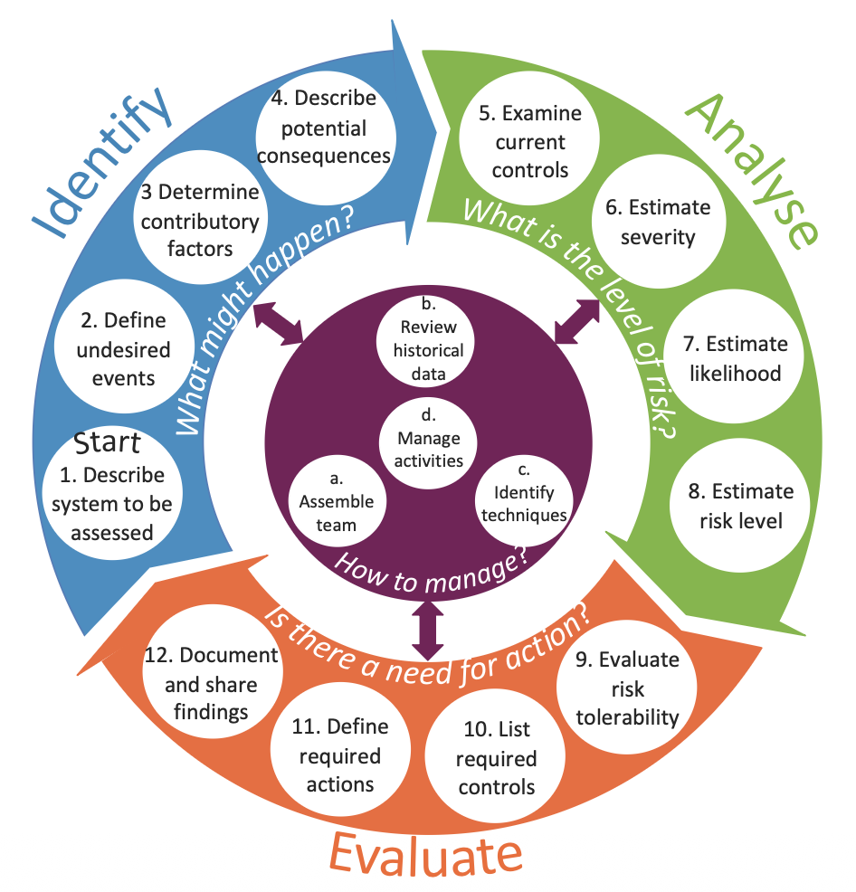

In brief
- The Risk Assessment Framework helps healthcare teams move from a quick risk score to a clearer discussion of what might happen, why it might happen, how serious it could be, and what should be done.
- It is organised around four practical questions:
- Identify: what might happen?
- Analyse: what is the level of risk?
- Evaluate: is action needed?
- Manage: how should the assessment be organised and followed up?
- The framework includes a visual model, explanation cards and a risk assessment form. The model gives structure; the cards provide prompts; the form records the reasoning and decisions.
- It is designed to support professional judgement, not replace it. Its value depends on good participation, relevant evidence, clear documentation and action after the assessment.
Why this topic matters
Risk assessment is meant to help people act before harm occurs. In hospitals, however, risk assessment can easily become a paperwork exercise: a risk is entered into a register, a likelihood score and consequence score are multiplied, and the final colour band is used to decide what level of attention is needed. That may be administratively convenient, but it does not always create a good understanding of the risk.
The problem is not that risk matrices, forms or registers are useless. They can be helpful when they are used carefully. The problem is that they can become the centre of the assessment, rather than a support for thinking. A score cannot tell us whether the system has been described well, whether the right people were involved, whether assumptions are realistic, whether existing controls work in practice, or whether the proposed actions will actually reduce risk.
The Risk Assessment Framework was developed to respond to these practical problems. It was designed through doctoral research on good risk assessment practice in hospitals, drawing on risk assessment standards, hospital policies and procedures, interviews with healthcare staff, questionnaire findings, risk management system data and evaluation with healthcare professionals. The purpose was to make the fundamentals of risk assessment easier to apply without producing a long guidance document that people would rarely use.
The core idea
The framework treats risk assessment as a structured conversation about a system, not as a scoring exercise. It asks the assessment team to understand the system first, then define undesired events, examine why they might occur, consider consequences, review controls, estimate the level of risk, judge tolerability and agree what needs to happen next.
The framework has three linked parts:
- A risk assessment model, which shows the overall flow of the assessment.
- Explanation cards, which turn each step into practical prompts and questions.
- A risk assessment form, which supports documentation, transparency and follow-up.
The model is organised around Identify, Analyse, Evaluate and Manage. These phases should not be understood as a rigid checklist that is completed once. Risk assessment is often iterative. As new information appears, the team may need to revisit the system description, redefine the undesired event, reconsider controls or revise the required actions.
A simple way to think about the framework
The four guiding questions
- Identify: What might happen?
- Analyse: What is the level of risk?
- Evaluate: Is there a need for action?
- Manage: How should the assessment be organised, supported and reviewed?

This simple structure is useful because it keeps the assessment from jumping too quickly to a number. If a team starts with “what score shall we give this?”, it may miss the deeper question: what exactly are we worried about, in which system, under which conditions, and with which controls already in place?
The framework therefore encourages people to slow down at the points where risk assessment is most vulnerable: defining the risk clearly, understanding contributory factors, examining whether controls are real and effective, and making the reasoning behind decisions visible.
Identify: what might happen?
The Identify phase is about understanding the system and defining the possible undesired events. This phase matters because a poorly defined risk will usually lead to a poor analysis. If the assessment is too vague, the team may end up discussing everything and nothing. If it is too narrow, important contributory factors and consequences may be missed.
1. Describe the system to be assessed
Start by asking: what is being assessed, and how does the system work? This may be a care pathway, a clinical process, a service change, a ward move, a medication process, a medical device implementation, an information system or an organisational activity.
A good system description should include the aim of the assessment, the system elements, the interactions between those elements, the boundary of the assessment and the wider context. In healthcare, the “system” may include patients, staff, teams, equipment, electronic systems, physical spaces, policies, suppliers, regulators and organisational pressures.
2. Define undesired events
Ask: what could go wrong? The undesired event should be specific enough to analyse. “Patient safety risk” is too broad. “Delay in recognising patient deterioration after transfer to a new ward area” is more useful because it identifies an event that can be explored.
Undesired events may relate to clinical practice, organisational performance, health and safety, information governance, staffing, equipment, care transitions or service continuity. Extreme cases should also be considered, not because every assessment should focus only on worst cases, but because rare severe events can expose important assumptions about controls and preparedness.
3. Determine contributory factors
Ask: what could contribute to the occurrence of the undesired event? This is where the framework moves away from a single-cause view of risk. Contributory factors may involve patients, staff, tasks, communication, equipment, control actions, organisational conditions and environmental factors.
The point is not to blame these categories. They are prompts to widen the analysis. For example, a missed medication dose may involve prescribing, availability of the medicine, workload, communication between shifts, electronic record design, patient movement, staffing levels and local escalation practices. Looking across these factors helps the team understand how risk is produced by the system.
4. Describe potential consequences
Ask: what are the potential consequences? Consequences may affect patients, staff, families, the organisation, service capacity, finances, reputation, legal obligations, data protection or the environment. They may also be immediate or delayed.
This step is important because some risks look small if only the first consequence is considered. A delay in discharge, for example, may not only inconvenience one patient. It may affect bed availability, staff workload, ambulance flow, elective activity, patient experience and downstream clinical decisions. Considering knock-on effects helps the assessment reflect how hospitals actually function as interconnected systems.
Analyse: what is the level of risk?
The Analyse phase examines existing controls and estimates the level of risk. This is where many assessments move directly to likelihood and severity scoring. The framework keeps scoring in the process, but it places it after the system, event, contributory factors, consequences and controls have been discussed.
5. Examine current controls
Ask: what controls are currently in place, and how effective are they? Controls may prevent an undesired event, detect it early, or reduce the severity of its consequences. Examples include training, procedures, staffing arrangements, equipment checks, electronic alerts, escalation routes, design features, supervision, audits and contingency plans.
A key question is whether the control works in practice. A policy that exists but is not known, accessible or usable is not a strong control. A checklist that is completed after the fact may provide documentation but little prevention. A good assessment therefore distinguishes between controls that are written down and controls that genuinely shape everyday work.
6. Estimate severity
Ask: how severe could the consequences be? Severity should be estimated using an agreed rating scheme and clear descriptions of each rating. The assessment should specify which consequence domain is being considered, such as patient harm, staff harm, service disruption, financial loss, legal exposure or reputational damage.
It is important not to hide different kinds of harm under a single label. A “moderate” clinical consequence and a “moderate” organisational consequence may mean very different things. The reasoning behind the rating should therefore be documented, not just the rating itself.
7. Estimate likelihood
Ask: how likely is the consequence to occur? Likelihood may be described using frequency, probability or qualitative judgement, depending on the nature of the risk and the data available. A recurring operational process may allow a frequency-based judgement; a one-off service change may require a probability-based or judgement-based estimate.
Likelihood estimates should be treated with care. Historical data can be useful, but it may be incomplete, under-reported or drawn from a system that is about to change. Expert judgement is often needed, but it should be made explicit. Where uncertainty is high, that uncertainty should be recorded rather than disguised by a confident-looking score.
8. Estimate risk level
Ask: what is the level of risk? In many hospitals this is done by combining severity and likelihood, often using a risk matrix. The framework does not prohibit this. Instead, it asks users to treat the risk level as one part of the decision-making process, not as the decision itself.
Risk scores can help compare and communicate risks, but they can also mislead. Two risks with the same score may have different meanings, different uncertainties, different legal implications and different control options. For this reason, the framework encourages teams to document the reasoning behind the score and to avoid using the score as the sole basis for action. Where risk depends on interactions between people, technology, procedures and organisations, the team should also record the control and feedback assumptions behind the rating.
Evaluate: is there a need for action?
The Evaluate phase asks whether the risk is tolerable and what, if anything, should be done. This is a decision-making phase, not simply a scoring phase. It requires judgement about acceptability, proportionality, feasibility and responsibility.
9. Evaluate risk tolerability
Ask: how tolerable is the risk? Tolerability should consider the risk level, written rules, legal requirements, professional standards, comparison with similar systems and the potential benefit of taking or accepting the risk.
This step is especially important in healthcare because risk cannot always be eliminated. Care often involves balancing competing needs: safety, timeliness, dignity, access, efficiency, patient preference and clinical benefit. The question is not only “is the score high?” but “is this risk acceptable in this context, with these controls, given what we know and do not know?”
10. List required controls
Ask: what new or improved controls are required? The framework encourages teams to link required controls to the contributory factors and current control weaknesses already identified. This helps avoid generic actions such as “remind staff” or “increase awareness” when the real problem is poor equipment design, unclear responsibility, inadequate feedback or unrealistic workload.
Controls may be eliminative, preventive, detective or reductive. They may remove a source of risk, reduce the likelihood of the undesired event, improve detection, or reduce the severity of consequences. Stronger controls usually change the system conditions under which people work; weaker controls often rely only on memory, vigilance or additional paperwork.
11. Define required actions
Ask: what actions are required to implement the controls? A control is only useful if it is translated into action. The assessment should identify what needs to be done, who is responsible, when it should happen, how progress will be reviewed and what priority should be given.
This is where many risk assessments lose impact. A good assessment does not end with a list of risks. It creates a clear route from risk understanding to risk management action.
12. Document and share findings
Ask: what are the findings and what lessons have been learnt? Documentation should include the system description, assumptions, limitations, method used, assessment findings, risk ratings, tolerability judgement, required controls, actions, responsibilities and review arrangements.
Good documentation supports transparency. It allows others to understand why decisions were made, what evidence was used and what still needs to be checked. Sharing findings also helps prevent risk assessment from becoming localised knowledge held only by the people who attended the meeting.
Manage: how should the assessment be organised?
The Manage phase supports every other part of the framework. It is not a final step. It is the work required to make the assessment credible, participatory and useful.
a. Assemble the team
Ask: who should be in the assessment team? A good assessment usually needs a facilitator who understands risk assessment and a multidisciplinary group of people who understand the system being assessed. Depending on the topic, this may include clinicians, nurses, pharmacists, managers, engineers, estates staff, human factors specialists, digital teams, governance leads, patients or patient representatives.
The team should be selected because they bring relevant knowledge, not simply because they hold a particular position. People close to the work often know how the system really operates. People at organisational levels may understand constraints, resources and accountability. Both perspectives matter.
b. Review historical data
Ask: what can be learnt from historical data? Useful sources may include incident reports, complaints, claims, audit findings, quality and performance reports, safety alerts, reports from external authorities, previous risk assessments and academic literature.
Historical data should be used thoughtfully. It can reveal patterns and known vulnerabilities, but it may also reflect what is easiest to report rather than what is most important. Absence of incident reports does not necessarily mean absence of risk.
c. Identify techniques
Ask: which techniques should be used? The framework is compatible with different risk assessment techniques. The choice should depend on the purpose of the assessment, the complexity of the system, the available evidence and the decisions that need to be supported.
For relatively simple local issues, a structured team discussion, system diagram, flow chart, checklist or risk assessment form may be sufficient. These can help describe the process, clarify who is involved and make assumptions visible. Peer review, multidisciplinary discussion, brainstorming, SWIFT or Delphi methods may also help identify risks and challenge narrow thinking.
For process-based risks, techniques such as FMEA can help examine where a process might fail, what the effects could be and what controls may be needed. Bow-tie analysis can help display pathways from causes to consequences and show preventive and mitigative controls. Risk matrices can support communication and prioritisation, but they should be used carefully and should not be treated as precise measurement tools.
For complex socio-technical risks, systems-based methods may be more appropriate. STPA can be useful where safety depends on control actions, feedback, responsibilities and constraints across people, technology and organisations. It is particularly helpful when risks may arise from unsafe interactions, missing controls, delayed feedback or inadequate coordination rather than from a single component failure. FRAM can be useful when the concern is everyday work, adaptation and performance variability. It helps analysts understand how functions depend on one another, how normal adjustments keep work going and how variability may combine to create vulnerability. CAST is usually not a prospective risk assessment method, but findings from CAST analyses of previous incidents can inform risk assessment by revealing weak controls, missing feedback and organisational assumptions that should be considered in future assessments.
These methods can be especially valuable for service redesign, digital health, medical technology, AI-enabled systems, complex care pathways, handovers, emergency response and other situations where risk emerges from interactions between people, tasks, tools, procedures, environments and organisational conditions.
Topic-specific assessment forms may also be needed for areas such as falls, moving and handling, infection control, medicines management or medical devices. These forms can be useful, but they should not be used in isolation when the risk is strongly shaped by wider system interactions.
The method should fit the question. A simple local issue may only need a structured discussion and a proportionate action plan. A high-risk service redesign may need several complementary techniques, for example a process map to define the work, STPA to examine unsafe control and feedback, FRAM to understand work-as-done and variability, and a risk matrix or prioritisation method to support decision-making. The aim is not to use the most sophisticated technique, but to choose methods that make the important risks, controls and assumptions visible.
d. Manage activities
Ask: how should people, data and techniques be deployed throughout the assessment? This includes coordination, communication, consultation, iteration through the framework, monitoring, review and tailoring the framework to the assessment need.
Risk assessment is not complete when the meeting ends. Risks should be monitored and reviewed, especially when the system changes, new information becomes available, controls are implemented, or the assessment assumptions no longer hold.
What this framework helps you see
The framework makes several often-hidden parts of risk assessment more visible.
- Risk is linked to a system. The same event may have different likelihood, consequences and controls in different settings.
- Controls need to be examined, not assumed. A control may exist on paper but fail under everyday work conditions.
- Risk scoring is not enough. Scores should support discussion, not replace judgement.
- Tolerability is a decision, not a colour. A colour band may guide attention, but acceptability depends on context, rules, uncertainty, benefits and available options.
- Actions must be owned and reviewed. Without ownership, timelines and review, risk assessment becomes documentation rather than management.
In this sense, the framework is not only a healthcare risk tool. It is also a way of improving the quality of safety conversations. It encourages people to ask better questions before deciding what to do.
How to use it carefully
When this may help
- Planning a new or changed service.
- Assessing risks before a ward, unit or process change.
- Reviewing operational or organisational risks.
- Structuring a patient safety risk discussion.
- Training staff in the fundamentals of risk assessment.
- Improving the quality of documentation behind risk register entries.
The framework should be tailored to the context. A quick local assessment should not become unnecessarily burdensome. A major service change should not be reduced to a five-minute scoring exercise. The key is proportionality: use enough structure to understand the risk and make a defensible decision.
I would use the framework in three stages.
Before the assessment
Clarify the purpose, define the system boundary, invite people with relevant knowledge, gather historical data and decide which techniques may be useful.
During the assessment
Work through the framework in a disciplined but flexible way. Encourage people to explain assumptions. Separate the description of the risk from the judgement about tolerability. Avoid allowing the score to close the conversation too early.
After the assessment
Document the reasoning, share findings, assign actions, monitor progress and review the assessment when the system changes. A good assessment should lead to learning and action, not just a completed form.
Common mistakes to avoid
- Starting with the risk matrix. Start with the system and the undesired event, not the score.
- Writing risks too vaguely. A risk should be clear enough that people can understand what might happen and what needs to be controlled.
- Listing controls without testing their realism. Ask whether controls are used, usable and effective in everyday work.
- Confusing tolerability with numerical score. A score informs tolerability; it does not determine it by itself.
- Producing actions that are too generic. “Raise awareness” is rarely enough unless the real problem is lack of awareness.
- Failing to close the loop. Risk assessment should include review of whether actions were implemented and whether they reduced the risk.
Limitations and cautions
The framework does not remove uncertainty. It cannot guarantee that every risk will be identified, that every rating will be correct or that every action will work. It supports structured judgement; it does not automate judgement.
The framework was developed primarily from a traditional risk assessment perspective, which focuses on potential undesired events. That is useful and still necessary in healthcare. However, it should be complemented where appropriate by Safety-II and resilience perspectives that ask how everyday work usually succeeds, how people adapt, and how the system can support safe performance under varying conditions.
The framework also needs organisational support. If risk assessment is treated only as compliance paperwork, even a well-designed framework will have limited value. The quality of the assessment depends on time, participation, openness, evidence, facilitation, follow-up and a genuine willingness to act on what is found.
Related publication(s)
- Kaya, G.K. Good Risk Assessment Practice in Hospitals. (2018). PhD thesis, University of Cambridge. DOI: 10.17863/CAM.20813.
- Kaya, G.K., Ward, J., Pearman, A. and Clarkson, J. (2021). Evaluation of the formal risk assessment practice in hospitals in England. Journal of Risk Research. 24(6), 771-779. DOI: 10.1080/13669877.2020.1775682.
- Kaya, G.K., Ward, J.R. and Clarkson, P.J. (2019). A framework to support risk assessment in hospitals. International Journal for Quality in Health Care. 31(5), 393-401. DOI: 10.1093/intqhc/mzy194.
- Kaya, G.K., Ward, J. and Clarkson, J. (2019). A review of risk matrices used in acute hospitals in England. Risk Analysis. 39(5), 1060-1070. DOI: 10.1111/risa.13221.
Selected references
- British Standards Institution. (2009). BS ISO 31000: Risk Management: Principles and Guidelines. London: British Standards Institution.
- British Standards Institution. (2010). BS EN 31010: Risk Management: Risk Assessment Techniques. London: British Standards Institution.
- Card, A.J., Ward, J.R. and Clarkson, P.J. (2014). Trust-level risk evaluation and risk control guidance in the NHS East of England. Risk Analysis, 34(8), 1469–1481. DOI: 10.1111/risa.12159.
- Vincent, C. and Amalberti, R. (2016). Safer Healthcare: Strategies for the Real World. Cham: Springer Open.